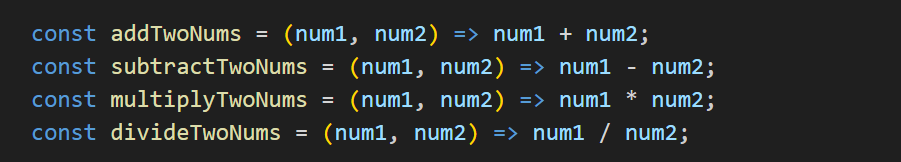
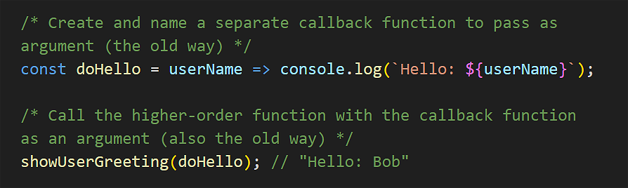

Learning Goals
At the end of this Tutorial, you will be able to:
- Understand the terms callback function and higher-order function in JavaScript.
- Pass function expressions to higher-order function as callbacks, using the anonymous and arrow function syntax for the passed functions.
- Write callback functions inline inside the parentheses of the higher-order function.
For this Tutorial, in your javascript/exercises folder, create a new HTML file named workfile-10.html.
Create a new empty text file named script-10.js and save it in this same folder.
Add a link to script-10.js in your workfile-9.html file using a <script> tag with the defer attribute.
About callback functions
In the previous Anonymous and arrow functions Tutorial, you learned to create function expressions and pass them as arguments to other functions.
For example, you built a general-purpose calculator function that can accept two values - and also the type of arithmetic operation to be performed on them.

Copy this code to your script-10.js file and verify it runs correctly.
// ======== WORKING WITH FUNCTION EXPRESSIONS ========
const addTwoNums = function (num1, num2) {
return num1 + num2;
};
const subtractTwoNums = function (num1, num2) {
return num1 - num2;
}
const multiplyTwoNums = function (num1, num2) {
return num1 * num2;
}
const divideTwoNums = function (num1, num2) {
return num1 / num2;
}
// The main, general-purpose function
function doCalculation(num1, num2, operation) {
return operation(num1, num2);
}
/* Call the main function with different arguments
The arguments can be numbers and an operation */
let resultCalcAdd = doCalculation(10, 5, addTwoNums);
console.log(`Calculator addition result: ${resultCalcAdd}`);// 15
let resultCalcSubtract = doCalculation(10, 5, subtractTwoNums);
console.log(`Calculator subtraction result: ${resultCalcSubtract}`);// 5As an exercise, convert the four anonymous functions that do arithmetic to arrow function format.
You can think of this code as containing two types of functions:
- Higher-order function: This is doCalculation(). It can accept another function as an argument.
- Callback function: Any one of the four basic arithmetic functions passed as arguments.
With this approach, you are no longer only passing data (numbers/strings); you are passing instructions (behaviour). The 'main' function has no built-in behaviour - it doesn't know what it's doing; it just knows how to run the functionality you give it.
Higher-order functions help make your code more reusable and modular by allowing you to work with functions like any other value.
At a more advanced level, higher-order functions can combine multiple functions to create a new function.
Synchronous callback functions
Let's consider the program flow in the above example:
- Push: The JavaScript engine starts running the 'main' doCalculation() function and receives the callback function as an argument. It pushes the 'main' function onto the Call Stack.
- Handover: Inside that 'main' function, the JavaScript engine hits the line operation(num1, num2). The engine pauses the 'main' function and pushes the callback function on top of it in the stack. This creates a blocking action. While a simple calculation like 10 + 5 happens too fast to notice, if this callback performed a heavy task (like processing 1 million rows of data), the entire web page would 'freeze' and become unresponsive until the callback finished.
- Execution: The engine runs the code inside the callback function.
- Pop/Return: When the callback hits a closing brace } or return, the engine pops (removes) it off the stack.
- Resume: The engine looks down and sees doCalculation() is now at the top of the stack again. It resumes execution exactly where it left off. Control is now returned to the 'main' function.
This program flow results from the fact that JavaScript is synchronous (single-threaded) language: it can do only one thing at a time. It reads code from top to bottom. If it hits a 'heavy' task (like performing an intensive calculation or fetching data from a remote server), the web page 'freezes' or 'hangs' until that task is done.
In short, a callback function is a function that is passed into another function as an argument, which is then invoked ('called back') inside the outer function to complete some kind of routine or action.
Below is the simplest possible example of a higher-order and a callback function working together.
// Very basic higher-order and callback function pattern
/* The function that will be passed as an argument to the
'callback' parameter of the 'main' function */
const callbackFunction = () => console.log("Hello from callback function.");
/* The 'main' function with a parameter named 'callback' */
function mainFunction(callback) {
// Do something
callback(); // run the callback function passed as an argument
};
// Run the main function
mainFunction(callbackFunction)Callback functions as data receivers
In our doCalculation() example, we passed both the data (num1, num2) and the instructions (callback) into the 'main' function. The 'main' function simply connected them together.
The 'main' function doesn't pass any data to the callback function. It just runs it.
However, in the real world:
- The 'main' function already has the data for the callback to work with, or,
- The 'main' function receives the data from somewhere else and passes it to the callback.
In such cases, we pass only the instructions (the callback) to the 'main' function. The 'main' function then injects its data into the callback when it runs it. The callback function then acts as a data receiver.
Consider the code example below.
// === CALLBACK FUNCTIONS AS DATA RECEIVERS ===
/* The 'main function accepts a parameter named 'callback'
But it already **has** the data (userName) for the callback to work with */
function fetchUserAndGreet(callback) {
let userName = "Alice";
callback(userName);
}
// Two callback functions that will receive data (name) from the 'main' function
const sayHello = userName => console.log(`Hello: ${userName}`);
const sayGoodbye = userName => console.log(`Goodbye: ${userName}`);
// Calling the 'main' function
fetchUserAndGreet(sayHello); // Outputs: "Hello, Alice"
fetchUserAndGreet(sayGoodbye); // Outputs: "Goodbye, Alice"Inline callback functions
In the examples above, we defined our callback functions separately and gave them names, such as addTwoNums() and sayHello().
However, if a callback is short and only used in one place, we often define it inline - that is, directly inside the 'main' function call.
Copy the higher-order function below. It has a single parameter ready to receive a callback function.
// === INLINE CALLBACK FUNCTIONS ===
// Higher-order function that accepts a callback as an argument
function showUserGreeting(callback) {
// Data supplied to callback
let userName = "Alice";
callback(userName);
}You could continue by creating and naming a separate callback function to pass as an argument, and then running the higher-order function, as before.
A more modern approach is to write the callback function directly inside the () parentheses of the higher-order function. Copy the code below.
/* Call the main function with the callback function
written inside the () in anonymous function syntax */
showUserGreeting(userName => {
console.log(`Hello: ${userName}`);
});Or, using arrow function syntax:
/* Call the main function with the callback function
written inside the () in shorter arrow function syntax */
showUserGreeting(userName => console.log(`Hello: ${userName}`));Note:
- The outer or higher-order function showUserGreeting(callback) must be defined beforehand so JavaScript knows how to handle the argument you pass it.
- The inner or callback function is defined on-the-fly. It didn't exist until this specific line of code ran.
With this approach, you are doing two things at once:
- Defining the callback function, and
- Passing it as an argument to the outer function.
Instead of passing a variable name (like sayHello), you are pasting the entire function definition directly into the () parentheses.
The callback function doesn't need a name because you aren't saving it to use later; you are using it right now and then forgetting about it.
This approach keeps the logic right where it is used. You don't have to scroll up to find a separate function definition.
Callbacks and the .forEach() loop
Many array methods, like the .forEach() loop introduced in Arrays of objects Tutorial, use callback functions to perform actions on each element in the array.
Copy the sample array to your script-10.js file.
// Creating an array with objects
const arrUsers = [
{ firstName: "Maria", age: 25, city: "New York" },
{ firstName: "Bob", age: 30, city: "Los Angeles" },
{ firstName: "Charlie", age: 35, city: "Chicago" }
];Next, create an anonymous function expression to use as a callback and save it to a variable.
/* Create anonymous function expression to use as callback */
const displayUserAnon = function(user) {
console.log(`Name: ${user.firstName}, Age: ${user.age}, City: ${user.city}`);
}Now, pass this function as a callback to the .forEach() loop to display the details of each user in the array.
/* .forEach() is a built-in array method that accepts
a callback function as an argument */
arrUsers.forEach(displayUserAnon);You could also have created the callback function in arrow function syntax. See below.
/* Create arrow function expression to use as callback */
const displayUserArrow = user => console.log(`Name: ${user.firstName}, Age: ${user.age}, City: ${user.city}`);Now that we have stored the arrow function in the variable displayUserArrow, we can pass that variable to .forEach() just like we did before:
arrUsers.forEach(displayUserArrow);But why create the callback function separately when you can define it inline? See below.
/* Define the callback function inline inside the .forEach() */
arrUsers.forEach(user => console.log(`Name: ${user.firstName}, Age: ${user.age}, City: ${user.city}`));This is the modern standard in JavaScript.
Asynchronous callback functions
In all the examples above, the callback ran immediately (synchronous). However, in JavaScript, we often use callbacks to handle things that happen later, like a user click or a data download.
In the next tutorial, Introduction to Events, you will use callbacks that don't block your code but wait for a specific action to occur.
You will also learn about asynchronous callbacks in the Introduction to the Fetch API Tutorial.
Try it yourself
In your workfile...
---
Create a main function called processText that accepts a string and a callback function. Then create two different callback functions that:
- Convert the text to uppercase
- Add exclamation marks to the end of the text
---
Given this array of numbers: [1, 2, 3, 4, 5].
Create a main function called transformArray that loops through the array and doubles each number in the loop.
---
Use the .forEach() loop on the array of numbers: [10, 20, 30].
Write an inline arrow function inside the parentheses that outputs each number multiplied by 5. Try to write it on a single line.
More learning resources
Tutorial Quiz
Tutorial Podcast
Sample AI prompts
What is the difference between a regular function and a callback function in JavaScript? Can you show me a basic example of a callback function and explain each part?Show me three different ways to write the same callback function using anonymous, arrow and inline function syntax. What are the advantages and disadvantages of each callback function syntax style?
Please provide examples of when to use each type of callback syntax.